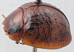
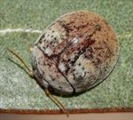
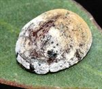
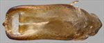
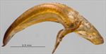
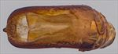
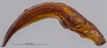
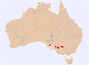

Click on images to enlarge


Male, Loxton, South Australia


Male, Mildura, New South Wales


Female, Balranald, New South Wales


Aedeagus, dorsal view (Loxton, South Australia)


Aedeagus, lateral view (Loxton, South Australia)


Aedeagus, dorsal view (Mildura, New South Wales)


Aedeagus, lateral view (Mildura, New South Wales)


Distribution
Name
Trachymela sp. Ta159
Reference specimen
2017-039, Loxton, South Australia.
Adult Description
Length: ♂ 4.8–6.3 mm (n=12), ♀ 5.1–6.4 mm (n=18).
Colouration:
- Head: uniformly light- to mid-brown with dark-brown or black-tipped mandibles; labrum straw-brown; antennomeres straw-brown, usually uniformly so, less often with distal antennomeres (usually only their distal extremity) slightly darker.
- Pronotum: brown, concolorous with head, with a prominent black macula present behind each eye that occupies much of the foveal area and is broader anteriorly, narrowing to a thin band just opposite humeral callus posteriorly, in a very few specimens these maculae are completely absent (see note below).
- Scutellum: brown, concolorous with pronotum, usually edged in a slightly darker shade of brown.
- Elytra: brown, concolorous with or fractionally darker than pronotum, the elytral disc is dotted with small to moderate-sized black (or dark-brown) verrucae, these are most dense near anterior edge, between humeral callus and elytral suture, along posterior edge of antero-median depression and some are often present even in the area of transverse depression, they are less frequent or rarely even absent in posterior half of elytral disc, a line of dark-brown verrucae is frequently present along discal margin, sometimes a short black ridge extends posteriorly from base centred between scutellum and humeral callus, elytral suture between elytral summit and apex sometimes narrowly edged in a darker shade of brown, humeral callus black.
- Venter & Legs: light brown with legs of a concolorous shade, anterior margins of thoracic ventrites sometimes slightly darker, inside surface of elytral epipleura brown.
- Cuticular Wax: a thin to quite thick layer of greyish wax is present over most of head and pronotum, with contrasting light brown wax often present in posterior part of discal region; the anterior third of elytra (up to about posterior edge of transverse depression) has greyish wax and it may be particularly dense and prominent in transverse depression and as small clumps on anterior edge of elytra adjacent to scutellum, the colour changes to a light- or medium-brown from posterior edge of median depression to the elytral apex – in rare instances, the colour is greyish throughout.
Morphology:
- Head: punctures moderately large (pd ≈ 1.5–2× ef) and quite evenly and quite densely distributed. Antennae short, particularly in females (AL/BL: ♂ 37–42%, ♀ 33–35%), filiform.
- Pronotum: almost evenly curved transversely, foveal depression absent or very shallow with epidermis sometimes elevated in a rounded pustule near its centre, discal area with surface usually smooth, rarely slightly uneven, puncturation usually clearly impressed, evenly distributed and moderately dense (spacing ≈ 2–2.5 pd), becoming much coarser at lateral margins, some much finer punctures are scattered among the larger ones. Front margins join lateral margins in a smoothly rounded right-angle, with lateral margin initially straight before curving smoothly and gradually towards rear margin.
- Scutellum: punctured throughout, with punctures similar to or slightly finer than those on adjacent area of pronotum.
- Elytra: surface slightly unevenly curved with a broad but very shallow depression extending from just below elytral summit towards the discal margin, punctures often distinct and relatively large, closely spaced and relatively evenly distributed over anterior two-thirds of surface, sometimes less so, with uneven surface obscuring punctures, punctures more crowded making surface more granular in posterior third, very fine punctures scattered on the interstices throughout, many mostly small, elevated, usually dark verrucae are present and quite unevenly distributed, with concentrations of slightly larger verrucae in anterior angle between humeral callus and scutellum and along posterior edge of antero-median depression (where they sometimes cluster to form a rough transverse ridge), verrucae tend to be smaller and more isolated in posterior third of disc, the verrucae tend not to be aligned in longitudinal series except for a prominent row along the lateral margin of disc that is usually present, a short elevated, sometimes interrupted ridge centred between scutellum and humeral callus extends posteriorly from anterior margin, surface continuous under humeral callus. Vertical extension of epipleura considerable (HCE/PW = 0.39–0.42), inner edge lightly scattered with short setae posteriorly.
- Venter: prosternal process with sides almost parallel, closed anteriorly, a light scatter of setae present along prosternal process and on mesoventrite, a single seta each on anterior, median and posterior trochanters; front edge of metaventrite beveled, slightly rounded.
Male Genitalia (Aedeagus):
- Dimensions: short (LPE/BL = 25–28%).
- Dorsal view: shaft broadest at basal sulcus, sides then converge very slightly and are then almost parallel to front of ostial opening, from where sides converge in a smooth arc towards apex with the angle of convergence becoming sharper shortly before apex, dorsal surface smoothly curved with dorso-median channel absent behind ostium, dorsolateral channels well-defined and converging slightly towards rear, tip protruding only slightly, ostium relatively large with ostial processes forward a considerable distance, anterior margin prominently lined with setae.
- Lateral view: shaft curved slightly near basal sulcus, then ventral surface noticeably and quite evenly curved towards apex before curving downwards very slightly at about 15% of distance from apex, tip small and slightly deflexed.
Immature Stages
Unknown.
Similar species
- Ta120: these two species are very similar, both in the placement and density of verrucae and the distribution of the cuticular wax but are clearly differentiated on the shape of the aedeagus. Their distributions also broadly overlap. The large black macula in the foveal areas of the pronotum is present on almost all specimens of Ta159 examined but is often absent or very reduced in Ta120.
- Ta174: another species in this group that is almost identical in size, cuticular wax distribution and distribution of verrucae. It often lacks the clearly defined black foveal maculae on the pronotum, and the posterior half of the inner epipleura are often black or dark-brown.
Notes
- Taxonomy: Ta159 is one of a cluster of small species occurring in mallee habitat and that can be very difficult to separate using only external morphological characters. Within this group, it is closest to Ta120 with which it co-occurs over a large geographical area.
- Host Associations: Ta159 occurs on mallee eucalypts, in particular Eucalyptus socialis and E. gracilis (both in the Symphyomyrtus: Bisectae, subsection Destitutae group of species).
- Morphological Variation: The black maculae behind each eye on the pronotum are quite constant in size and present on all but a very few specimens, and in these it is completely absent rather than present as a foveal spot. However, most of these specimens cannot be clearly assigned to Ta159 and may in fact be either Ta174 or Ta120.
Copyright © 2026. All rights reserved.